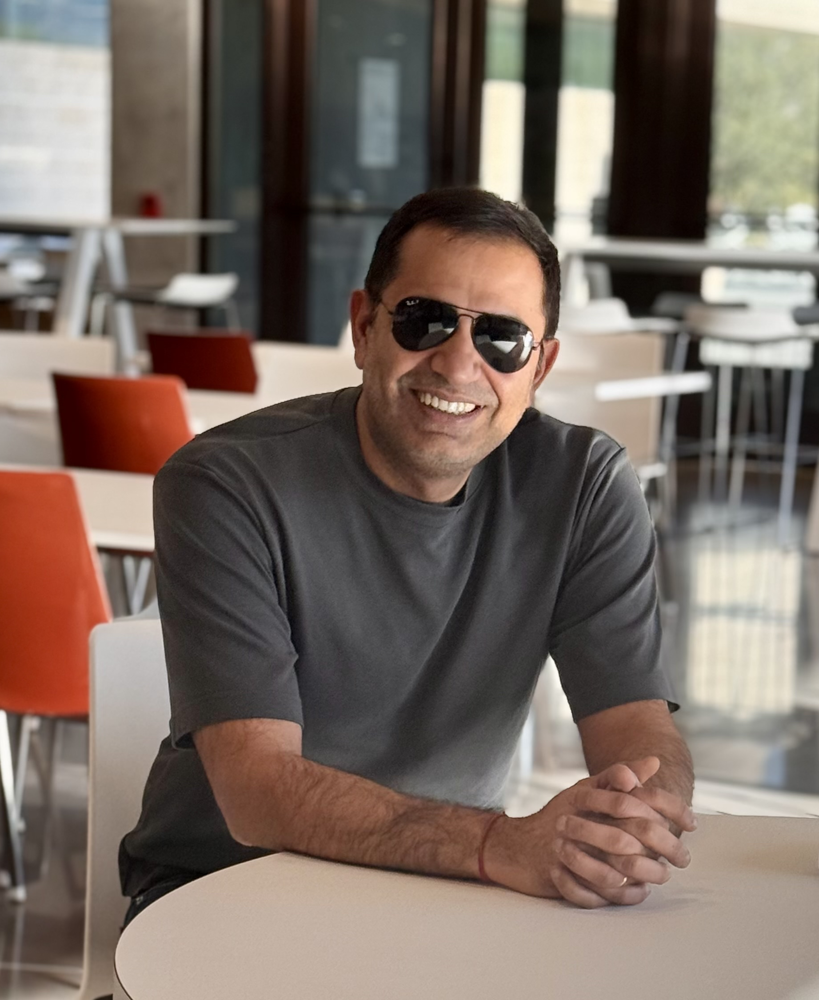

Ravi Tandon

Ravi Tandon is a Professor and the Craig M. Berge Faculty Fellow in the Department of Electrical and Computer Engineering at the University of Arizona, where he also holds a courtesy appointment in Applied Mathematics. He received the Ph.D. degree in Electrical and Computer Engineering from the University of Maryland, College Park in 2010, and the B.Tech. degree in Electrical Engineering from the Indian Institute of Technology Kanpur in 2004. He was a postdoctoral research associate at Princeton University from 2010 to 2012, and held positions at Virginia Tech from 2012 to 2015.
His research interests include trustworthy AI/ML, privacy-preserving AI, federated and distributed learning, large language models, speculative decoding, uncertainty quantification, wireless communications, and information theory. He is a recipient of the NSF CAREER Award, the Keysight Early Career Professor Award, and a Best Paper Award at IEEE Globecom. He has served as an Associate Editor for IEEE Transactions on Information Theory, IEEE Transactions on Wireless Communications, and IEEE Transactions on Communications.
Current Research Themes
My work focuses on foundations and systems for AI that remain reliable under privacy constraints, distributed deployment, uncertainty, and adversarial or resource-limited settings. This work has been supported by funding from NSF, NIH, DOE, and industry partners.
Privacy & Security
Differential privacy and inference privacyPrivate LLM fine-tuning and alignmentSecure AI workflows
View →Trustworthy AI/ML
Uncertainty quantificationRobustness and certified defensesReliable prediction and decisions
View →Efficient AI Systems
Federated and distributed learningResource-aware inference and designEdge, cloud, and wireless AI systems
View →Information Theory
Learning, communication, and codingFundamental limits ofdistributed and networked systems
View →